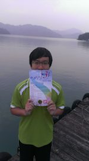

"Focus on the journey, not the destination. Joy is found not in finishing an activity but in doing it." - Greg Anderson
About Me
Hello, You can call me Daniel Hsieh (謝朋儒).
I was born in Taipei, Taiwan, Republic of China (R.O.C).
I have a lot of interests, exploring mother nature especially.
Currently, I am doing research on multimedia analysis and indexing with my advisor Prof. Hsu (Winston Hsu).
"I'm a learner." - Hsuan-Tien Lin, Professor, CSIE, NTU
Research Topics
- Multimedia analysis and indexing
- Information retrieval techniques
- Computer Vision
- Digital Image Processing
- Machine learning
Education
- M.S. degree in R group, CMLab, Graduate Institute of Networking and Multimedia, National Taiwan University (2013-)
- B.S. degree in Computer Science and Information Engineering, National Taiwan University (2009-2013)
- National Taichung First Senior High School (2006-2009)
Experience
- CMLab Financial Leader, 2014-
- 2014 Openhci Workshop member, 2014
- Summer Seminar Teaching Assistant, 06/2014-08/2014
- Database System Teaching Assistant, 09/2013-01/2014
- Software Engineer (Cipher, NFC, Windows DDI), Egistec., 07/2013-08/2013
- Drummer and Band Vice-Leader, 2009-2013
- Tutor, 2008-
Works
- SharingWheels (short bike rental platform)
- Eventy, analyst and programmer (social platform)
- Facial Attribute Annotation Tool (used in CMLab)
- Shooting Life, a first person view shooting game, Android application (Multimedia Analysis and Indexing)
- Jockey Master (remote control platform)
Awards and Honors
- Excellent Teaching Assistant Award, CSIE, NTU, Fall 2013
- Microsoft Imagine Cup Nominated, Taiwan, 2013
- SongShanCiYou Temple Scholarship, 2010-2013
- Computer Network LAB 2nd prize, CSIE, NTU, 2012
- NTU Presidential Award, Spring 2011
Interests
- Cycling
- Swiming 
- Playing Band
- Hiking
- Traveling
Cycling around the island 01/2014
Swimming across sun moon lake 07/2013
Shutupotaku band 2009-2013

Yanmingshan 2013
Lab excursion 06/2014
"My friends are like my family." - The Big Bang Theory
Contact Me
- Email: r02944011 [at] ntu [dot] edu [dot] tw
- Phone: +886911803886